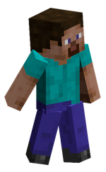
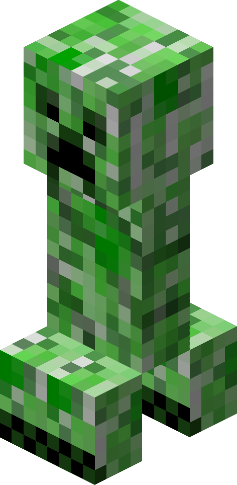
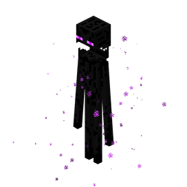

Кого можна зустріти?

Стів
Головний герой гри. Він може носити діамантову броню, будувати будинки та приручати вовків.

Кріпер
Небезпечний зелений моб. Якщо підійти надто близько — він вибухне! Тс-с-с...

Ендермен
Високий та загадковий. Вміє телепортуватися і красти блоки. Головне — не дивись йому в очі!
Чому я люблю цю гру
Творчість без меж
Я граю в Майнкрафт вже 3 роки. Найбільше мені подобається режим "Креатив", тому що там можна будувати гігантські міста. Минулого тижня я побудував школу та стадіон.
Також ми з друзями любимо грати на серверах у міні-ігри, наприклад Bed Wars.